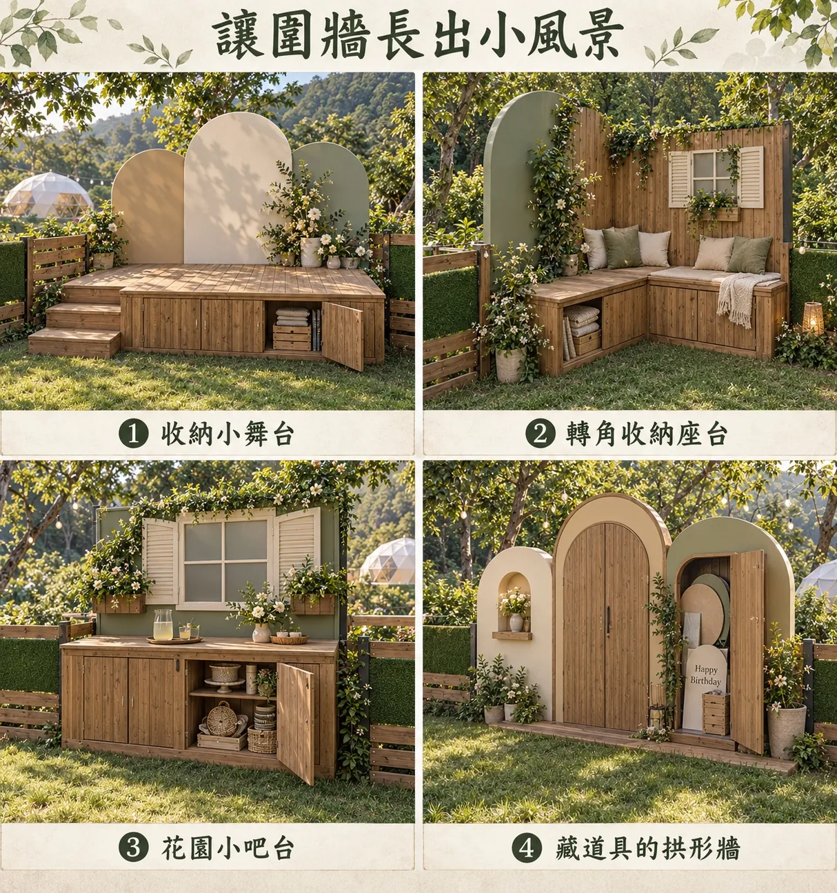
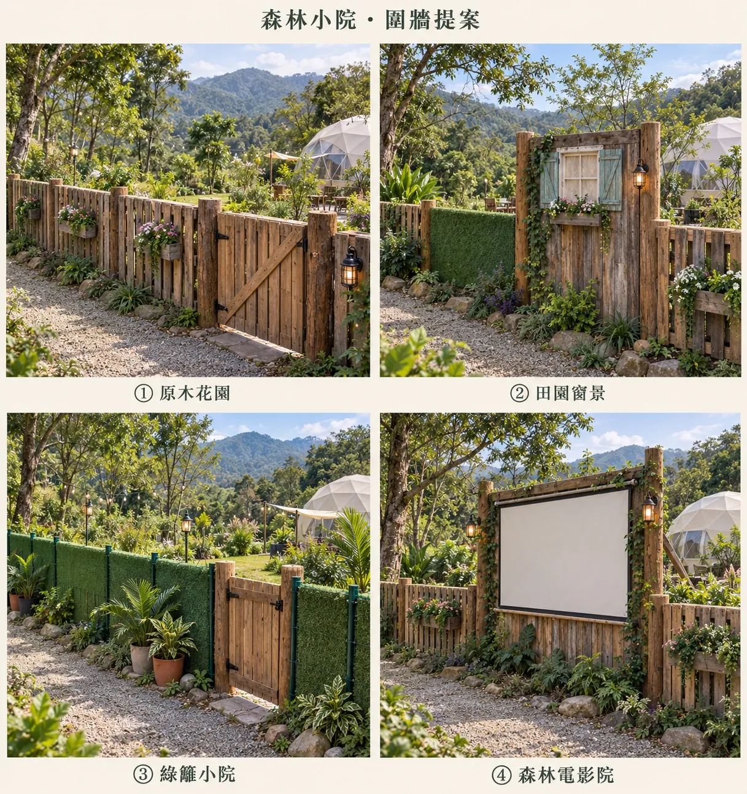
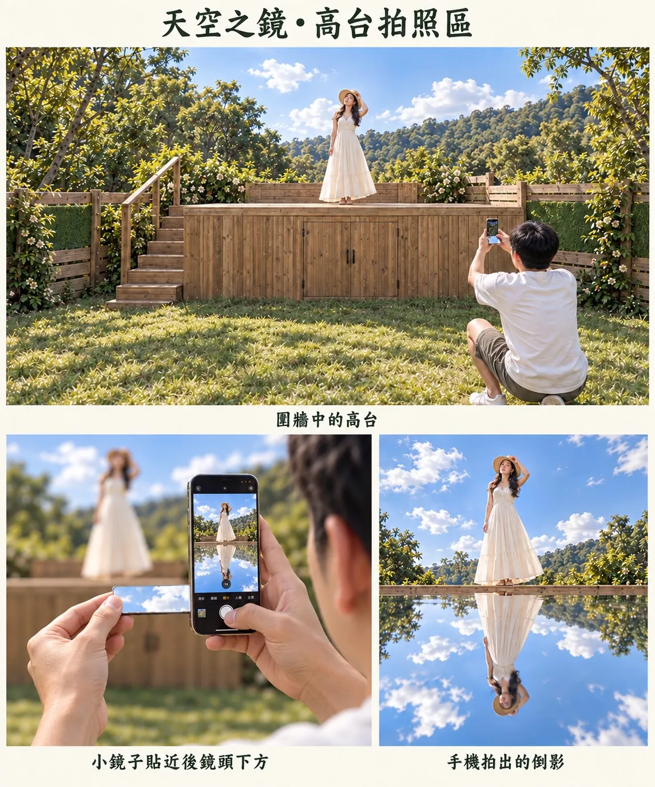
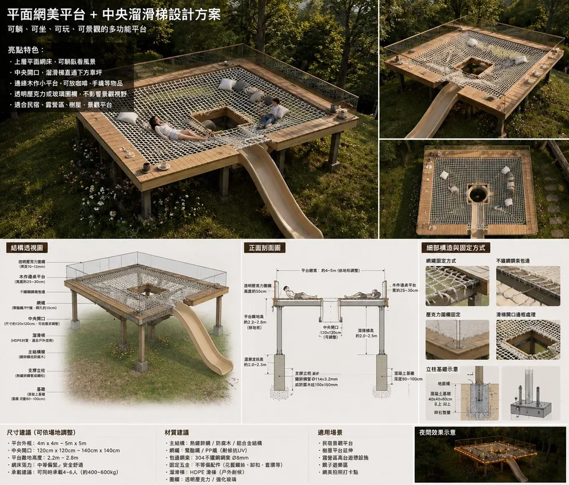
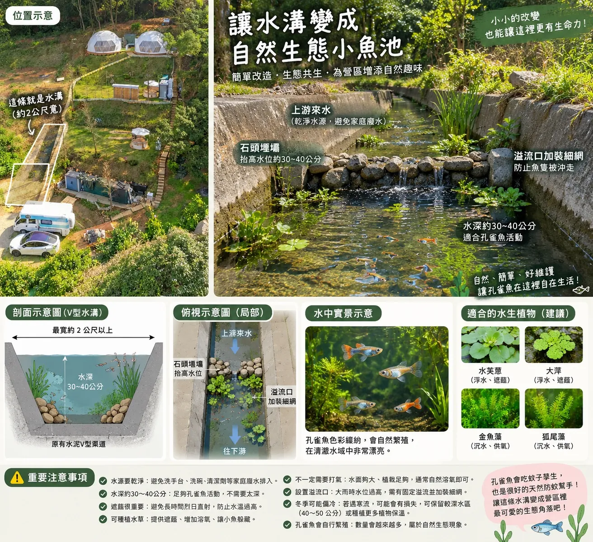
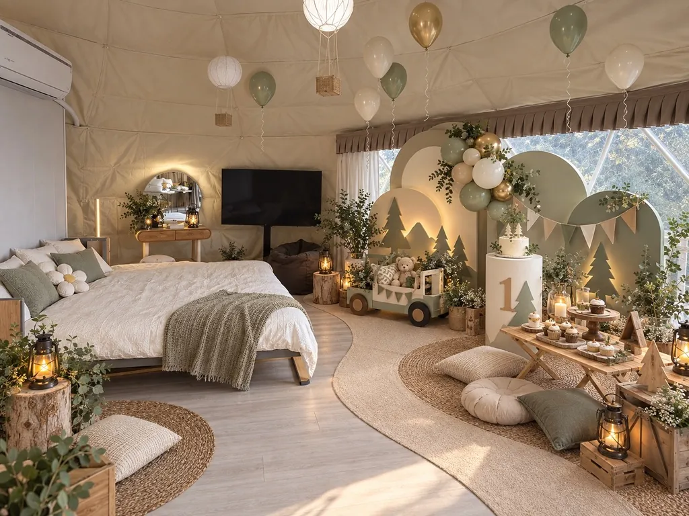
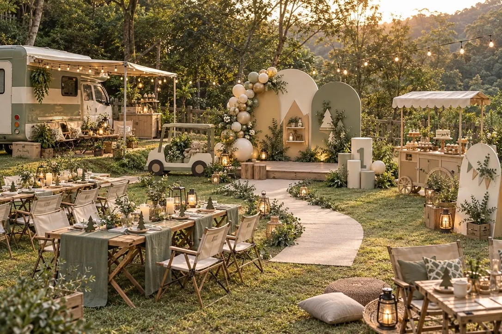
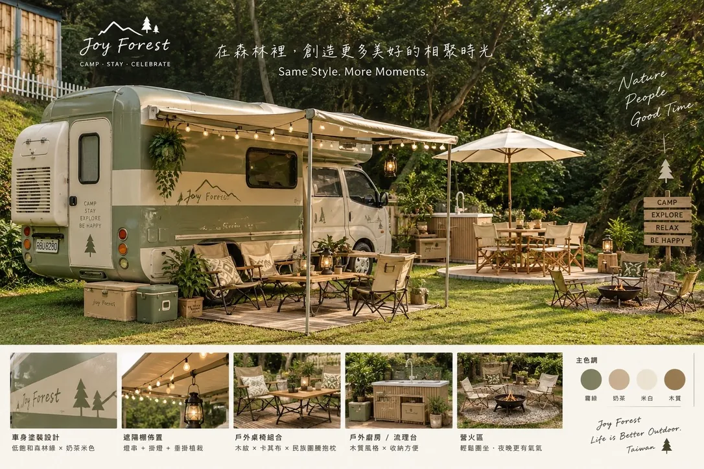
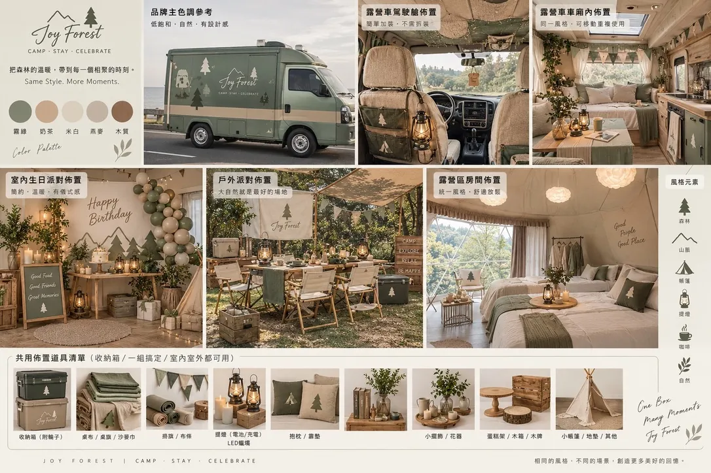
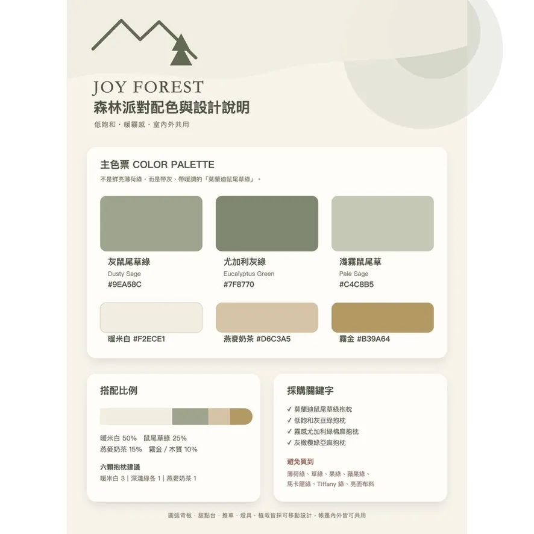

讓圍牆長出小風景
把原本只負責區隔空間的圍牆，延伸成可使用、可拍照的複合式設施。圖中包含具收納空間的小舞台、L 型轉角收納座椅、帶窗景的花園小吧台，以及可以隱藏生日背板與拍攝道具的拱形牆；整體以暖白、鼠尾草綠、木質與植栽維持森林感。
Joy Forest Future Ideas
每張圖片都是尚未定案的視覺或空間構想。按住卡片左側的三條線上下拖曳，即可調整參考優先順序；若構想放錯，也可以直接按「刪除」。排序與刪除結果都會自動保存在目前這台裝置的瀏覽器中。
共 10 項構想

把原本只負責區隔空間的圍牆，延伸成可使用、可拍照的複合式設施。圖中包含具收納空間的小舞台、L 型轉角收納座椅、帶窗景的花園小吧台，以及可以隱藏生日背板與拍攝道具的拱形牆；整體以暖白、鼠尾草綠、木質與植栽維持森林感。

以原木門片、花箱、爬藤與暖色壁燈打造更完整的庭院入口，可依空間選擇原木花園、田園窗景或較輕量的綠籬小院；若保留一面完整木牆，也能結合可收放的投影幕，成為夜間森林電影院，讓圍牆同時具有遮蔽、造景與活動用途。

在圍牆內設置帶階梯與下方收納櫃的木造高台，讓人物站到較高位置避開雜亂背景；拍攝者把小鏡子貼近手機鏡頭下方，就能利用低角度將天空、山林與人物倒影收進同一張照片。這是一個兼具收納、休憩與社群拍照效果的景觀平台構想。

規劃約 4～5 公尺見方的高架木平台，以承重繩網形成可躺、可坐、可玩的休憩面，中間保留洞口銜接溜滑梯，周圍加設透明護欄、扶手與夜間燈光。這張圖同時整理了鋼構、木平台、繩網與基礎固定方式；若要實作，仍須由專業結構與遊具安全人員重新核算載重、墜落防護及法規。

利用既有約兩公尺寬的 V 型水溝，在乾淨上游水源條件下用石頭矮壩蓄出約 30～40 公分水深，並於溢流口加裝細網，搭配水芙蓉、大萍、金魚藻或狐尾藻，形成孔雀魚可自然繁殖的小型生態水域。這項構想需先確認家庭廢水、暴雨水位、溢流固定與病媒蚊控制，再決定是否施工。

把帳篷內的床區與窗邊空間整合成一歲生日或小型慶生場景，使用霧綠、奶茶、米白與少量霧金氣球，搭配山形森林背板、蛋糕台、木質玩具、燈籠及低矮野餐桌。重點是保留睡眠與走動動線，讓布置、拍照、用餐及住宿可以在同一個空間完成。

以露營車、草地長桌、生日拍照背板、甜點推車、燈籠與休憩座位組成完整活動動線，讓用餐、慶生、攝影與聊天各有區域又能保持同一套森林風格。這個方向適合親子生日、家庭聚會、小型企業活動或品牌包場，可依人數縮減桌數與布置規模。

以低飽和霧綠、奶茶、米白與木質色為主，將車身塗裝、品牌圖樣、遮雨棚燈串、戶外桌椅、料理流理台、收納箱與營火區統一成自然而有設計感的視覺。適合作為露營車外觀翻新、戶外配件採購及未來品牌攝影的整體參考。

建立一組能在露營車、帳篷房間、戶外派對與生日場景之間重複使用的布置道具，包括品牌收納箱、霧綠與奶茶色織品、樹形靠枕、旗幟、LED 提燈、木箱、花器、小帳篷及蛋糕架。採購時維持同一色系與材質，就能用較少道具快速變換不同場景。

主色以灰鼠尾草綠、尤加利灰綠與淡霧鼠尾草組成，搭配暖米白、燕麥奶茶及霧金／木質色；建議比例為暖米白 50%、鼠尾草綠 25%、燕麥奶茶 15%、霧金或木質 10%。可作為氣球、布幔、桌巾、靠枕、收納箱及拍攝背板的採購比色基準。